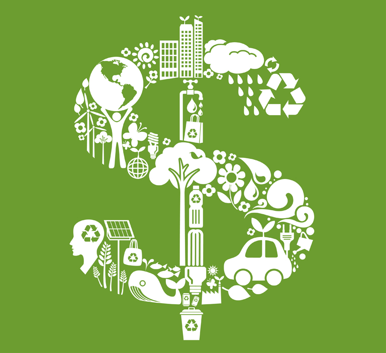

La sustentabilidad económica comprende la implementación de una serie de prácticas económicamente rentables y éticamente justas, regida por criterios de responsabilidad social y medioambiental. En este sentido, promueve un uso racional de los recursos económicos que permita, a partir del empleo de los mínimos recursos (medios, materia, energía), la maximización de los beneficios. Su objetivo es lograr, mediante un modelo consciente de desarrollo económico, un cierto nivel de bienestar social que brinde a toda la población la posibilidad de acceder a un buen nivel de vida y tener las mismas oportunidades.
Factores que ingluyen la sustentabilidad Económica |
¿Cómo puede ser una persona sustentablemente Económica? |
|---|---|
|
El crecimiento econ√≥mico es una variable Si el PIB crece a un ritmo superior al del crecimiento de la poblaci√≥n, se dice que el nivel de vida de √©sta aumenta. Si por el contrario la tasa de crecimiento de la poblaci√≥n es mayor que la tasa de crecimiento del PIB, el nivel de vida de la poblaci√≥n est√° disminuyendo. ü§ë |
Para lograr sustentabilidad, es necesaria la concertación y creación de alianzas que conlleven a la modificación de patrones de producción y consumo y que se de la oportunidad de construir una sociedad más limpia, justa y equitativa, contribuyendo a la mejora de la calidad de vida de todo el mundo. |
|  |